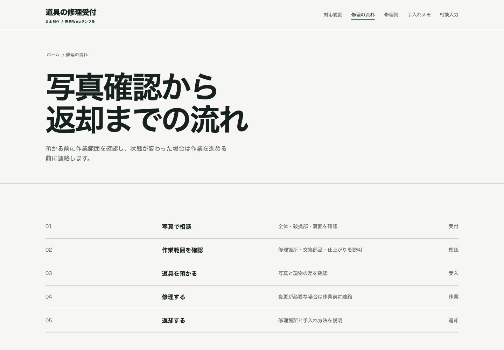
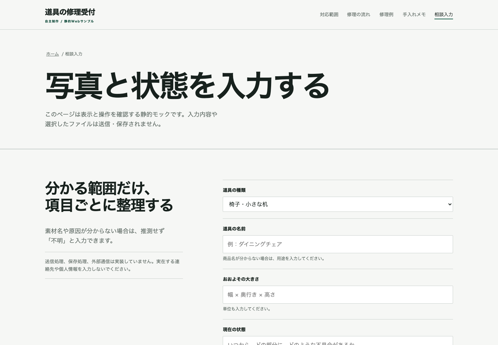

自主制作 04 / HTML・CSS・JavaScript / 6ページ
ページごとの役割を、実装まで通す
家具と生活道具の修理受付を題材に、案内、対象範囲、受付工程、架空例、手入れメモ、相談入力を6ページへ分けました。相談入力は表示用の静的モックで、送信や保存は行いません。

画面設計
6ページを、同じ見た目の複製にしませんでした。
サイト内で必要な読み方は一つではありません。対象を知るページ、工程を追うページ、例を比べるページ、入力するページで、情報の並び方を変えました。共通するのはナビゲーション、文字、余白、罫線の規則です。
- 01ホームは相談前の準備を優先
写真、状態、サイズを先に示し、詳しい案内へつなげました。
- 02対応範囲は対象外も同じ重さで表示
電気、ガス、水道、安全器具など、専門窓口へ渡す範囲を分けました。
- 03工程は表形式で追える構成
受付から返却までを、作業、確認内容、状態の列で並べました。
- 04入力画面は静的境界を明記
ラベルと補助文を実装し、送信ボタン、保存処理、外部通信は追加していません。
- 05モバイル操作を別途実装
メニュー開閉、Escapeでの閉鎖、フォーカス復帰、44px以上の操作領域を確認しました。
案内、工程、入力
3画面は同じ1440×1000のブラウザ条件で撮影しました。サイト本体では6ページすべてを移動できます。


実装と境界
このケースで確認できること
確認できる
- 6ページの情報設計と共通ナビ
- HTML・CSS・JavaScriptの静的実装
- モバイルメニューとキーボード操作
- ラベル、補助文、入力UI
- 外部フォント・解析なしの構成
この作品では示していない
- フォーム送信、保存、データベース
- CMS、決済、会員機能、バックエンド
- SEO運用、アクセス解析、保守契約
- 本番サービスのセキュリティ保証